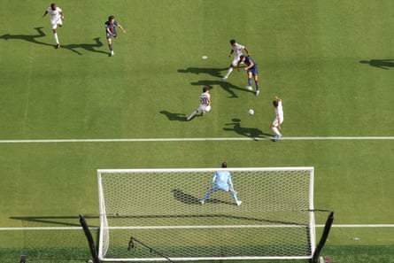

There was a moment towards the end of Kylian Mbappé’s final season in France when Luis Enrique called him into his office and explained that if they did things his way then Paris Saint-Germain could become an “absolute machine”.
A little over a year later, on the day his first season at Real Madrid came to an end against his former club, the striker saw for himself, up close and painful, just how right his coach had been. The team that went to Munich and put five past Inter , the biggest winning margin in a European Cup final, came to New York and scored four against the game’s greatest aristocrats to take them to the final of the Club World Cup.
If PSG had not scored more, it was because they did not need to. Three came inside half an hour here, two from Fabián Ruiz either side of another from Ousmane Dembélé; the fourth, scored by Gonçalo Ramos was an adornment added in the 87th minute, the ease with which it was scored eloquent. Madrid were not just defeated at the MetLife Stadium; they were destroyed, taken apart and never given the chance to compete.
Under a new manager, their time may come, the absences of Trent Alexander-Arnold and Dean Huijsen did not help, nor did the shift in formation with the return of Mbappé, and Xabi Alonso reflected on the errors that exposed them. But this went deeper; it is PSG’s time now.
This is some machine, all right. Unstoppable, the sense of superiority just overwhelming from start to … well, not finish exactly, if only because the real finish came so early.
By the time Ruiz gave them the lead after six minutes, it was the fourth clear chance they had, Madrid overrun already. First, Khvicha Kvaratskhelia hit the side-netting; then Thibaut Courtois made two incredible stops, suggesting this might be another of those days when the bullets could fly, everyone unloading on him, and he would still be standing there undefeated at the end of it. This time, though, it was not to be. Even he couldn’t stop everything.
It did not help that he had been sold out by his centre-backs. So badly, in fact, that the best thing that happened in the sequence that led to the first goal was that PSG scored it. Raúl Asencio allowed a simple control to escape . Suddenly a blue shirt was upon him – now there’s a line that would be repeated, defining much of this – and Dembélé took the ball from him, right in front of goal. Courtois took Dembélé down, committing what would have been a penalty and possibly a red card had Ruiz not been on hand to sidefoot into the empty net.
Gonçalo Ramos (second right) scores PSG’s fourth goal in the 87th minute.Photograph: Charly Triballeau/AFP/Getty Images
It was Antonio Rüdiger’s turn next, swiping at and missing the ball. Again, Dembélé was on to him in a flash. Racing through, he guided past Courtois. Nine minutes in and this was done. Not just because of the goals, although a third followed, but the play, the intensity in PSG and the lack of it from Madrid. The recent evolution under Alonso was nowhere to be seen, optimism evaporating.
Yet if Madrid had fallen off a cliff, their opponents had forced them to the edge and helped push them over it too, relentless. Vitinha, Ruiz and João Neves closed every gap as fast as the front three opened them. And the full-backs, Achraf Hakimi and Nuno Mendes … well, calling them full-backs feels utterly inadequate.
Indeed, when Madrid showed the slightest sign of a reaction, Mbappé running up the left, it was Hakimi that ended it all by making the third goal. Setting off near his area, running 70 yards and playing three passes, he reached the other end and set up Ruiz to roll Federico Valverde and score. Half an hour in, PSG had 78% of the ball, 10 shots and were 3-0 up, as good as through.
There was a Kvaratskhelia moment so good it made you laugh, taking it off Mbappé, nutmegging Arda Güler and heading off up the wing. Jude Bellingham had to make a superb recovery tackle but Madrid had been opened again, just as they had a moment earlier when they were grateful for a heavy Désiré Doué touch as he dashed free.
And indeed when the referee, Szymon Marciniak, called back another PSG break because Mbappé was down. Courtois made two more saves before the break. At which point, it was all Madrid could aspire to for this to end here.
Which it kind of did. Kvaratskhelia and Dembélé were gone by the hour, Ruiz and Doué six minutes later. Between those, Bellingham and Vinícius Júnior made way too. Gigi Donnarumma did not have a save to make, the contest closed. But there at the end were Bradley Barcola and Ramos playing it between them in the Madrid area, the striker turning and adding another for the fun of it, a final little flourish from the machine.